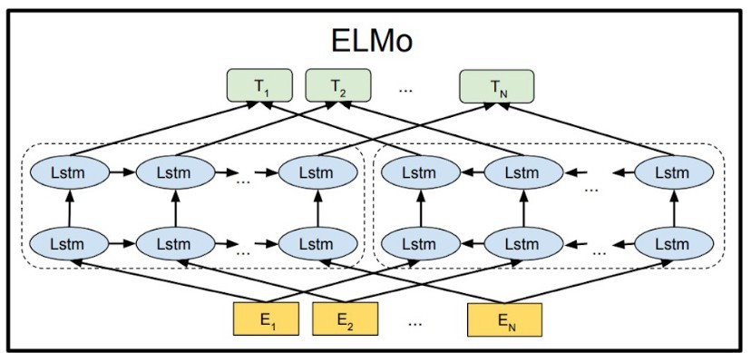
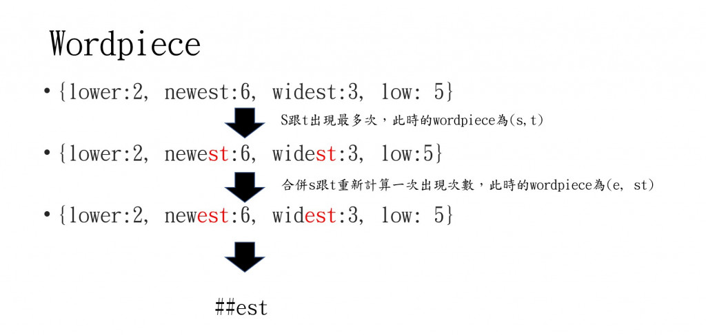
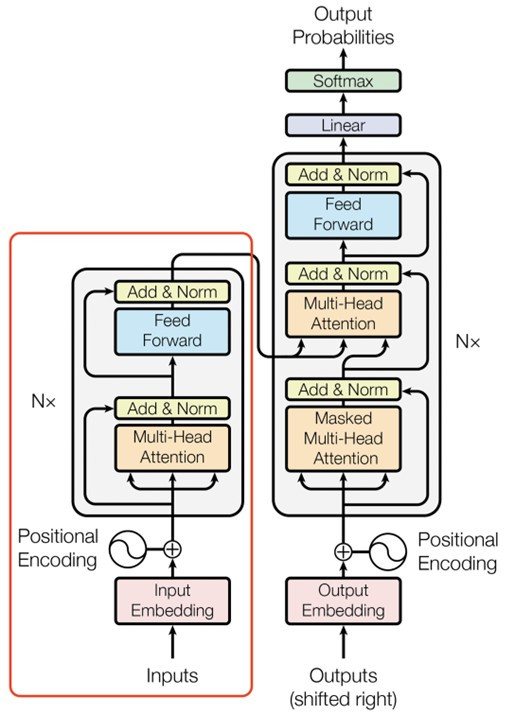
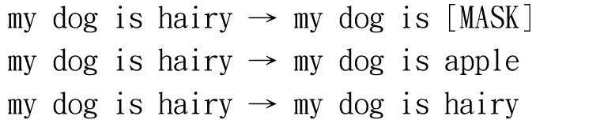

【day17】假消息辨識-BERT(Bidirectional Encoder Representations from Transformers)(上)
發布日期: 2022-09-21 20:48:09
原文連結: https://ithelp.ithome.com.tw/articles/10295113
BERT介紹
我們昨天說到了transformers，那今天就來談談transformers中最有名的NLP pre-train model，基於變換器的雙向編碼器表示技術（Bidirectional Encoder Representations from Transformers）簡稱BERT。BERT是一篇在2018年發表在IEEE的論文，並且在發布時屠殺了當時GLUE、SQuAD、SWAG數據集準確率的排行榜，穩穩地拿下第一的寶座，也影響了後續NLP任務的訓練方式，不過我們在開始介紹BERT之前，先來了解一下當時最強大的兩個語言模型
在BERT發表前的兩個重大model介紹
ELMO
在BERT的論文發布前，我們所使用的NLP模型，基本上都是使用transformers或LSTM的方法訓練而成的，例如BERT的前身語言模型嵌入(Embeddings from Language Models)簡稱ELMO，是一個featur-based的pre-train model。

來源:https://medium.com/programming-with-data/31-elmo-embeddings-from-language-models-%E5%B5%8C%E5%85%A5%E5%BC%8F%E8%AA%9E%E8%A8%80%E6%A8%A1%E5%9E%8B-c59937da83af
ELMO是利用BiLSTM所訓練出來的模型，這種LSTM的會創建雙層雙向的神經網路，最後將資訊拚接起來，而ELMO最大的特點就是使用了3層embedding，來訓練不同的結果。
第一層的embedding也叫做token embedding，與我們先前使用的embedding並沒有任何差異，這層embedding只代表文本之間最淺層的表示。
第二層的embedding也叫做segment embedding是來計算文字之間的上下文關係，在這層的embedding只有0與1，前句代表0，後句代表1，因為在文本中時常會有前文對應不上後文的情形，若將這種資料拿去訓練，神經網路訓練出來的結果就會非常不好，所以在這層embedding中就是為了解決這個問題。
經過了這兩層的輸出，ELMO得到了以下公式:y = W1xE1 + W2xE2(w:權重 e:embedding層)， 通過兩層的embedding與兩層的LSTM來計算輸出，若是一句話當中前後句符合(W2E2)又是有邏輯的話(W1E1)那這個Y值就會是一個很高的分數。
最後是第三層的embedding也叫做positon embedding，在這層中紀錄著文本輸入的序列，因為我們都知道文字反過來念可能會有不同的涵義，例如"走開"跟"開走"就是一種完全不同的意思，所以我們需要記錄這些文字的位子，以免使神經網路搞錯實際的含意。
GPT2
GPT 是一種fine-tune的pre-train model，他是只使用Transformers中的encocder來當作模型的基本，這代表他無法做NER、情緒辨識等需要encodoer的NLP任務，所以GPT只會用於文本生成，例如機器翻譯、文本摘要、文本生成等。如果有想了解GPT文本生成的方式可以觀看我昨天的文章【day16】NLP的首選模型Transformer介紹。
而這個模型的最大特點就是，模型參數量非常的巨大是當時參數量最龐大的語言模型(1542M)，與ELMO(94M)相比足足大了16.4倍。GPT生產文字的方式就是利用transformers由左到右的讀取文字，並且通過巨量的文本資料(40GB的文本資料)來訓練，得到各文字之間的文字分布。
在訓練資料時GPT使用了一種word piece的技巧，word piece的主要實現方式叫做雙字節編碼（Byte-Pair Encoding），BPE的過程可以理解為把一個單詞再拆分，減少資料大小，並且加強文字所代表的意思。例如:"loved"、"loving"、"loves"這三個單詞，本身的意思都是“愛”，但神經網路會認為這三個字是不相同的，只是他們的意思相近，當我們文本裡有太多這種資料，訓練結果肯定會有問題。
所以這時候BET演算法會找出頻率最高相鄰序列，並依次循環把序列合併，我們用以下這張圖片來看BET演算法的計算方式。

看完了圖片後，是不是了解BET演算法的過程了呢?我們可以利用這種方式找到文字中的字根，拆解後墜與實際文字含意，來達成同字不同意的問題。
總結一下GPT所做的事，第一個就是導入word piece的技巧，使後墜不相同的文字也能計算出相同的效果，第二個就是大力出奇蹟，使用了龐大的模型參數跟巨量的訓練集，訓練出一個很好的結果，GPT用了以上的方法在文本生成上取得了相當優良的成績。
BERT為何能屠榜

來源:李弘毅老師youtube
為何BERT能夠屠榜，原因就是作者改善了GPT、ELMO這兩個模型的共有缺點，並且結合兩者的優點，與改善缺點，最後通過MLM的方法，修正了文字只能從左到右理解的問題。
我們先來看BERT結合了哪些GPT與ELMO的優點好了，第一點就是使用GPT中word piece的方式來縮小token大小。再來就是使用ELMO的三層embedding來記錄輸入訊息與上下文關係。並且將ELMO的LSTM層換拋棄掉，改使用transformers中的encoder，因為是採用encoder的架構所以輸出都能看見所有的輸入，所以只需加入一個額外的輸出層，就能在NLP任務上得到不錯的結果。
再來是BERT有一些特殊標籤，來處理一些特殊問題，這點再GPT與ELMO當中雖然都擁有相似的標籤，但BERT的標籤功能是最多的，我們來看到以下表格。
| 名稱 | 說明 |
|---|---|
| [CLS] | 這個標籤會放在程式的開頭當中，輸出時這個CLS會作為整個序列的repr. |
| [SEP] | 有兩個句子的文本會被串接成一個輸入序列，並在兩句之間插入這個 token 以做區隔 |
| [UNK] | 沒出現在 BERT token裡頭的字會被這個 token 取代 |
| [PAD] | zero padding 遮罩，將長度不一的輸入序列補齊方便做 batch 運算 |
| [MASK] | 未知遮罩，僅在預訓練階段會用到 |
也許你看完後還不太懂，我們來看看BERT的輸入究竟是什麼樣子。假設今天的輸入是"我是學生，我在上學中"，那經過特殊標籤的轉換就換變成[CLS]我是學生[SEP]我在上學中[SEP]，這裡的CLS與SEP都是BERT在訓練下游任務中非常重要的標籤。CLS這個標籤的目的，就是希望我們文本訓練完的資料都能使用這個CLS來表達，因為BERT並沒有decoder，所以透過CLS這個標籤來當作最後的輸出最後與我們的下游任務憶起做計算。再來是SEP標籤，這個標籤的目是來分割上下文，使第二層的segment embedding能夠知道文字的前後關係
但這樣就能成為屠榜機器嗎?答案是否定的，BERT真正強大的地方就是使用了一個新的技巧叫做Masked Language Model(MLM)，這種訓練方式可以讓輸入能夠考慮整個文本的資料，不像是ELMO與GPT只考慮一定方向，接下來我們來說說MLM的實際使用方法。
MLM會將先前創建的wordpiece以15%的機率替換為遮罩(Mask)，之後有80%的機率轉換成特殊標籤[MASK]，10%轉換成隨機字串，10%完全不替換，這邊只有80%的機率替換成[MASK]是因為[MASK]標籤只會出現在預訓練階段，實際使用時並沒有這個標籤，所以為了能夠更貼近下游任務，所以將剩下的20%來作為我們在實際訓練時會看到的數據

我們來看一下BERT論文中的例子，來方便讓我們理解，為什麼這樣可以使BERT考量到整個文本。可以看到圖片中的文字my dog is hairy 替換成 my dog is [MASK]，在這個階段當中，BERT會去想辦法還原被遮蔽掉的文字，並且經過了多次的運算，來找到MASK當中最適合填入哪些單字。
也就是因為這個任務，更改了後續模型的訓練方式，由原本的單一方向，變成了多方考量，也衍生了許多MLM的變種，例如:採用GAN的方法生成文字來填充MASK這個單字、更換[MASK]特殊記號等方法。
看完了BERT的介紹後是不是想要來看看這麼model到底能做什麼樣的應用呢?所以我們明天要使用BERT辨識假消息，看看效果究竟會如何